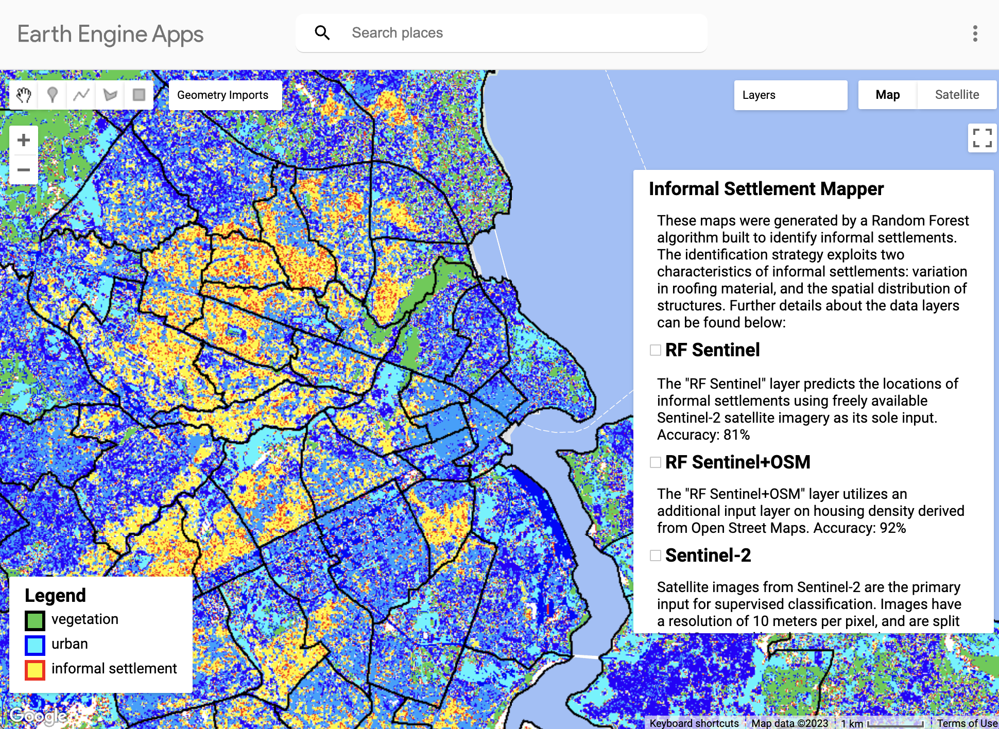

5 Week 5: Google Earth Engine
5.1 Summary
While we’ve spent the past few weeks learning how to correct sensor data, we’ve now been introduced to Google Earth Engine, a service for processing, analysing, and visualising geospatial data, which also provides a vast library of super massive datasets with already corrected data. It allows for processing at scale. Its user interface and development environment make for easy usage of their processing libraries, reading documentation, inspecting output, and visualisation.
Typical processes that can be done in EE include:
data preprocessing (filtering by time frame, masking out clouds)
geometry operations
image analysis
statistical analysis
modelling / machine learning.
While EE provides many powerful tools for processing large amounts of data, it’s not as great for analysis. Analysis that might take a few lines of code in R are many more lines in javascript. Therefore, it’s recommended to get the relevant data we need from EE, then export it and do further analysis in R.
5.2 Applications
Some of Google Earth Engines most powerful applications are within the realm of
environmental monitoring:
- tracking land use change
- monitoring deforestation
- air quality, surface temperatures, water quality
- flood detection
- damage detection
- agriculture (crop patterns, soil health)
And within the societal realm, including…
- population mapping
- detecting informal settlements
- understanding patterns of urbanisation
- traffic patterns
- using nighttime lights to estimate GDP / economic development
Perhaps one of the most useful features is the ability to make interactive Google earth engine applications that are readily usable by relevant stakeholders such as NGO’s, researchers, government, or local authorities. By providing an interface that allows users to customise parameter inputs, these apps allow these agencies to generate insights specific to their needs and can empower them to make data-driven decisions.
Here is a cool app!
Informal settlement detection in Dar es Salaam by Ollie Balinger: Source: Informal Settlement Mapper
- Uses sentinel-2 data and a random forest classifier to detect informal settlements based on roof materials and open street map data to measure housing density. - I’m currently taking another module in which we’ve studied informal settlement development in Dar es Salaam. The literature we look at is mostly qualitative. We look at case studies of specific areas and generally identify the types of areas that informal settlements occur — along major roads, at the urban edges, in the inner city. But this type of data usage and analysis allows for quantitative analysis — we can answer questions like what percentage of the settlements occur in which types of areas? In which areas should we focus the most resources?
5.3 Reflection
I think it’s great that services like this exist and provide their tools and data for free because it makes the entry bar for getting into remote sensing analysis much lower, allowing more people to utilise and benefit from it. Because it has so many powerful applications within climate and social justice, it’s important that the people who work within relevant sectors have access this type of information. Traditionally agencies that work toward societal or climate related causes don’t have as much funding or technical expertise as other more lucrative sectors within tech, so Google Earth Engine makes it a lot easier for the people who need this data and the insights from it to access and learn it.
I do think it’s important that we learned how to correct the data even though we most likely won’t need to do it ourselves in the future. For one, there is value in learning where the data we receive comes from and how it is processed beforehand (especially knowing the implications of processing it a certain way — maybe there’s a situation in which it doesn’t make sense for the type of analysis we’re doing and we’d need to process it differently). Furthermore, this is a service provided by one very powerful company, and if they decide to shut it down one day, or start charging for it (more a plausible scenario), we may need to start doing it ourselves (or to build a new product that competes with theirs 🤠).